2011 News

Eastern Branch Carol Service at Fishtoft
A carol service for bell ringers followed afternoon ringing at Butterwick, on Saturday 3rd December 2011. The service was held at Fishtoft, and led by the Rev Andrew Higginson, a ringing vicar, whose wife also rings. There were five carols and four readings, given by: Rhoda Reynolds, Tom Freeston, John Collett and Rev Nicky Bates. Geoff Evison played the organ.
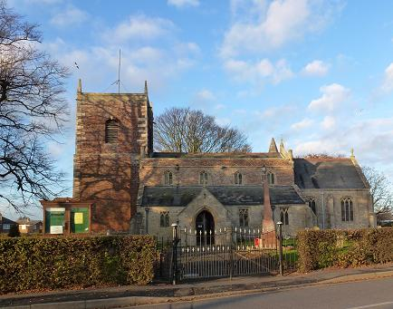
A faith tea with Maggie Bennett and Viv Simpson in charge of tea and coffee, was held in the room at the back of St Guthlac's, an ample amount of faith produced plenty of tea.
Next was the meeting, opened by a prayer from President Tom Freeston, who also welcomed everyone especially the Guild Master Alan Payne and his wife Joan. Jo French was elected as a new member, Mick Smith gave a report from the recent Guild committee meeting. Next year's programme was discussed and a grant of £600 was awarded to Freiston. Tom Freeston reminded those present that at the forthcoming Eastern Branch AGM on January 28th at Ingoldmells, the following posts need to be filled: secretary, ringing master, assistant ringing master and vice president. After Tom's vote of thanks there was ringing at Fishtoft until 9 including St Nicholas Doubles following the Christmas theme.
Report: Val Wild
Pudsey Rung for Children in Need
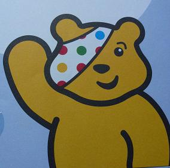
£10 was raised for Children in Need by ringing Pudsey surprise major at Sutterton on Friday 11th November 2011, at the Eastern Branch surprise major practice. Nearly everyone who rang Pudsey received a Pudsey Bear sticker, other methods were rung too.
Horncastle St Mary, Learners' Practice - 5th November
Learners of all abilities and ages met at Horncastle St Mary, for an afternoon of ringing on Saturday 5th November 2011. Don Hare the local tower captain welcomed us and Peter Udy (Eastern Branch ringing master) made sure everyone was able to have a go at what they wanted, with help where needed.
It was good to see a wide selection of towers represented and to have visitors from the Central and Southern Branches, especially the Guild Master, Alan Payne and his wife Joan, after what must have been a record length Guild committee meeting in Lincoln.
Learners included those wanting rounds and call changes, those wanting practice calling plain bob minor, and lots of other methods too. The ringing lasted for two and a half hours, with thankfully no fireworks!
Report: Val Wild
Eastern Branch Quiz
Congratulations to the Wrinklies, who came first on Saturday 29th October 2011 in Alford church hall at the Eastern Branch, Guild fund raiser. Five teams competed for the Betty Collett cup, which was awarded for the first time to Maggie Bennett (representing the 'Wrinklies') by John Collett, who reminded us that Betty had always supported the Eastern Branch, and had enjoyed the previous quiz only two days before she sadly died. The winning team included Maggie and David Bennett, Viv Simpson and Tom Freeston, scoring 45. Next were joint second 'Alford Clangers' and 'Mixed up Minimus' 42 points, 'St Mary's' 40 and 'Peter's Pirates' with 38.
The quiz was a mixture of questions and tasks, set and delivered by Julia Limage, the questions had us racking our brains, whilst the matchbox challenge set us searching through pockets and bags to find as many items as we could to fill a box and still be able to close it. Each item counted for one point.
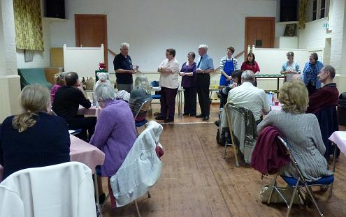
After all the mental exercise, we were ready for supper. Kate Meyer and her helpers produced a delicious hot meal rounded off with apple crumble and custard courtesy of Ian Ansell.
The raffle was next, lots of interesting prizes raised £37 and then Tom Freeston gave the vote of thanks, to Kate and helpers, to Julia for the 'simple questions', to John for the cup and additional prizes, and to everyone for supporting the evening which raised £117 in total for the Guild BRF. Additional notices were reminding those present of the the next Eastern Branch meeting on Saturday November 5th at Horncastle 2 til 5, learners' practice, the ringing and carol service on 3rd December at Butterwick and Fishtoft where it is to be a faith tea. Also the Branch AGM at Ingoldmells on 28th January where we need a new president and secretary as Tom and Julia gave notice at the last AGM that they would stand down. Finally a mention that the Elloe Deaneries are having ringing at Surfleet on November 19th followed by lunch. Guild Christmas cards and mouse mats were on sale, designed and produced by Philip Green of Crowland.
All in all a fun way to raised funds for the Guild.
Report: Val Wild
We Came Second at Barton!
At the Guild eight bell striking competition at St Mary's Barton on Humber, on Saturday 15th October 2011, the test piece was four courses of Little Bob Major and the results were:
1st: Central Branch (30 faults)
2nd: Eastern Branch (36 faults)
3rd: Southern Branch (42 faults)
4th: West Lindsay (50 faults)
5th: Northern Branch (60 faults)
The judges, Heather and Philip Grover from Newark, said that the Eastern Branch team rang at a good pace for the bells and at times produced the nicest ringing of the competition.
Ringing by Rutland Water, by Coach
On 1st October members of the Eastern Branch made their annual outing to a far away place …Rutland this year to be precise.
When checking the weather forecast the night before, to our surprise, it appeared the weather was going to be sunny! All the ringers woke up nice and early to catch the bus, and Kate and her family were, for possibly the first time in history, early! After the coach journey, we pulled up outsideNorth Luffenham, a very nice ring of six. The weather was turning out to be sunny – just what the weatherman promised.
After this ring it was back on the coach to Edith Weston, the tower before lunch. Again Rutland produced very nice bells, which had a ladder and a trapdoor to enter, most ringers made it up including Tom Palmer, with some assistance from Mick Smith. Both towers were a very good start to the outing.
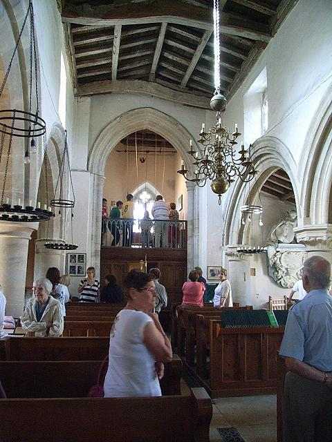
The ringers then travelled to Oakham, which meant one thing – lunch time! The ringers all split up and went off to find lunch. With the weather being very hot and sunny at this stage some of the ringers had a picnic in Oakham Park. Although expecting to ring at Oakham, we were told that Janice Elley had been let down at nine o’clock the previous night but fortunately she had, very efficiently, managed to organise another tower to ring at: Braunston. These also turned out to be a very nice little ring of six – not a bad replacement.
We then travelled to Langham. These bells turned out to be the most challenging ring of the day and many ringers did well just to ring the bells. The ringers then had tea on the banks of Rutland Water, a very nice setting in the warm sunshine.
The coach departed to Empingham, but no one arrived to unlock the tower so Janice Elley rang the secretary of the Rutland Branch who gave her the local contact number – however, the secretary had misheard which tower we were at and the incorrect number was given. Consequently there was a tower unlocked with no ringers and a locked tower several miles away with a coach-full of ringers. Empingham was given up on – you can’t win them all – and the ringers went back home, past the lovely views of Rutland Water and St. Matthew’s Church Normanton, which partially sits in the water.
Overall this was yet another very successful outing and many ringers got to ring on different bells for the first time. It was a good experience for everybody. We hope there will be many more successful outings in the future.
Our thanks go to Janice Elley for organising the outing and, despite all the set-backs, it went smoothly. Our thanks also go to Mick Ross for driving the coach and his very good connections with the coach company, and the Rutland Branch of the Peterborough Diocesan Guild of Church Bellringers, for accommodating us.
Report: Emily Waters, Alford
Benington Bells Rung for Heritage Weekend
The six bells of All Saints, Benington were rung on Saturday 10th September 2011 for the Lincolnshire Heritage Open Days.
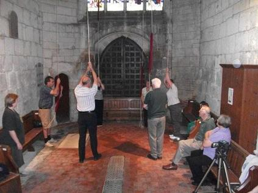
The team: Simon Pearson, Tony Barker, Isabel Barker, Yvonne Smith, John Collett and Joanne French
Benington church is currently closed for public worship and in the care of the Lincoln Diocese until a new use can be found for it. The diocesan committee responsible for the building had a concerns for the safety of the bell frame, in particular the way it is secured within the tower. A recent inspection and silent test ringing revealed only a small amount of movement in the frame and confirmed the bells are ringable.
The Benington Community Heritage Trust are hoping to secure the future of the building and currently exploring various future uses. On Saturday 10th September 2011 to open a traditional rural crafts event arranged by the Trust, the bells were rung open for the first time in many years and again the following day, before the Harvest Festival service. Whilst the church remains closed, any applications for ringing the bells will need to be made to the Secretary of the Diocesan Closed Churches Uses Committee.
Report: Tony Barker
Photo: Tom Freeston
Branch Practice at Tattershall
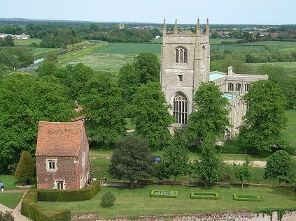
The local ringers from Holy Trinity, Tattershall gave a warm welcome to the Eastern Branch on Saturday 3rd September 2011. The ringing was a good mixture of methods, rounds and call changes from 7 to 9 in the evening.
Refreshments were served, which were very well received and Tom Freeston thanked all those who had provided cakes and made the tea and coffee. He also thanked local tower captain Mark Hibbard for the use of the bells and reminded everyone that on Oct 1st it is the Eastern Branch coach outing to Rutland. Anyone wishing to go, should book a seat on the coach by contacting Tom or outing organiser Janice Elley. Guild mouse mats and Guild newsletters were available. Tom also mentioned the final of the Guild 6 bell striking competition which was to be held on Saturday 10th September at Upton and Willingham.
Later on in the evening, Peter Udy's plan for the quarter peal week was passed round and ringers were asked to put their name down where they wanted to ring a quarter. Please let Peter know if you would like to join in.
Thanks again to all those who contributed to the Eastern Branch ringing at Tattershall.
HMS Boston's Bell Dedicated at Boston Stump
A dedication service took place in St Botolph's Church (The Stump) Boston at 11am on Tuesday 12th July 2011, to welcome HMS Boston's bell, now hung in the church.
HMS Boston, a minesweeper which took part in the Second World War, was launched on 30th December 1940 and in 1941 the then Boston Borough Corporation, presented a bell to the ship at a cost of £28 10s.

HMS Boston
The ship was sold off after the war and was broken up at Charlestown, Fife, Scotland in 1948.
Part of the disposal process is for 'trophies' (which includes ships' bells) to be placed in the Royal Navy Trophy Centre in Portsmouth. However, the trustees of the Royal Navy Centre recently enquired if the bell could be on permanent display in St Botolph's church, and the required faculty has been obtained for this to be done. There is, however, a condition that the bell will be returned to the Royal Navy if a new ship is ever named HMS Boston.
The dedication service, conducted by the vicar of Boston, the Rev Canon Robin Whitehead, was attended by the Worshipful the Mayor of Boston Councilor Mary Wright, the Secretary of the Royal Navy Trophy Trustees LT. Commander David Costigan, standard bearers and members of ex-service associations and members of the public
Report: Tom Freeston
Sibsey Windmill BBQ
Thank you to everyone who helped or supported the BBQ in any way at Sibsey on Saturday July 2nd 2011, an amazing £711.50 was raised for the Eastern Branch bell repair fund.

Read Jonathon Clarke's full report (with more pictures) at the Guild website: [Click here]
Six-Bell Striking Competition at Friskney - 4th June 2011
This year’s Eastern Branch striking competition was held at Friskney where three teams gathered to compete for the George Brewster cup. They were also joined by other branch members who took part in general ringing before and after the competition. The evening was started at 4.30pm by a learners’ practice which was well attended and proved helpful.
At 5pm the curtains of the ringing gallery were closed and the competition commenced. The first team to ring were Alford who rang doubles. After the Alford team had come down from the tower feeling rather proud of their performance, the next team was being organised which was the scratch band. The scratch band rang doubles. After the scratch band had rung their test piece there was another break while the next team waited for two members of their team to arrive. This gave everyone the chance to have some of the refreshments. The last team were Kirton who also rang doubles. After the ringing the teams and their supporters gathered at the bottom of the tower for the results.
The judge this year was Rowland Morant who has made the great achievement of ringing in over 1000 peals. He made comments on the ringing which included the scratch bands exemplary leading. He then read out the results in which the scratch band were awarded 63 faults placing them 3rd, Kirton were awarded 56 faults placing them 2nd and Alford were awarded 43 faults placing them 1st. After the results were read out the Branch thanked Rowland for judging the competition and Tony and Isabelle Barker for the use of the bells and for the refreshments. Rowland then presented the cup to the Alford team. There was then general ringing until 9pm.
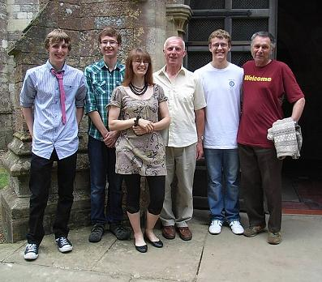
First Place: Alford (43 Faults)
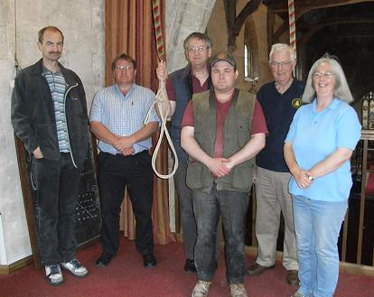
Second Place: Kirton (56 Faults)
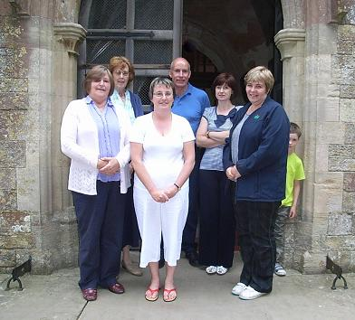
Third Place: Scratch (63 Faults)
Report: Joe Waters, Langton by Spilsby
May Meeting at West Keal and Old Bolingbroke
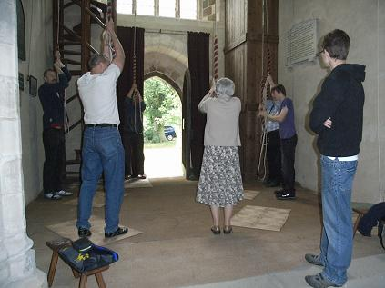
Eastern Branch ringers in action at West Keal, St Helen.
A good turn out rang at West Keal in the afternoon of May 7th and then moved on to Old Bolingbroke for the ringers' service. Tea was in The Black Horse, where we were made very welcome, and the landlord told us of his ringing forebears in Ludlow, he also introduced us to his three legged cat, known as Triple Bob. We stayed in the pub for the meeting, after which there was more ringing at Old Bolingbroke, once the church key had been located!
Report: Val Wild
Royal Wedding Quarter Peal Rung at Fishtoft
Friday 29th April 2011
St Guthlac, Fishtoft
1260 Plain Bob Doubles in 45 mins
- J William Daubney
- Aubrey Pepper
- David Bennett
- G John Collett (C)
- Thomas J Freeston
- Simon Pearson
Rung to celebrate the wedding today of HRH Prince William and Catherine Middleton

(Left to Right:) Tom Freeston, David Bennett, Bill Daubney, Simon Pearson, John Collett, Aubrey Pepper
Ringing World National Youth Striking Competition in London
On the 26th March 2011 four young ringers from the Eastern Branch, Ben Meyer, Daniel Meyer, Emily Waters, Joe Waters, joined two eight bell teams made up of members from acrossLincolnshire to take part in the Ringing World National Youth Striking Competition at St Saviour’s church, Pimlico in London.
Each of the teams of bell ringers, all aged under 19, were asked to ring a test piece of 160 rows of their choice from call changes, Triples (seven bells) or Major (eight bells). MDG MarketDeepGrantham), of which Emily was a member, were drawn to ring seventh and rang call changes while The Lincolnshire Poachers, of which Ben Dan and Joe were members, were drawn eighth and rang Plain Bob Triples.
Following an early start the four young ringers all arrived inLondonin time to listen to the first band ring a competent practice and test piece by the Sussex Young Ringers.
After seeing some of the sights in London they met with the rest of the two bands at Pimlico.
Following the competition they all went to the Central Hall at Westminster where, prior to the results of the competition, were witnesses to 100 changes being rung on 24 hand bells (a world record) which was composed especially for the day.
The Judges, Simon Linford (Chief Judge and Past Master of the Ancient Society of College Youths), Tessa Beadman, Immogen Brooke and James Marchbank explained how their judging system awarded grades in a similar way to GCSEs and the A-level examination system.
Their comments on the ringing of the twelve bands included good and constructive points with Simon stating that all the teams produced a high standard of ringing. One of the comments included stating that “the Lincolnshire Poachers rang in a professional and business-like manner”.
The Lincolnshire Poachers were placed second in the method category and the MDG were placed fifth in the call change category.
In the overall competition the Lincolnshire Poachers were placed joint fourth and the MDG team were placed joint eighth.
We are most grateful to Emma Southerington for arranging and coaching the MDG team and to Sue Faull and Ian Till for arranging and coaching the Lincolnshire Poachers team.
The MDG Team:
- Alistair Cherry (Grantham) (Conductor) 16yrs,
- Chloe Reynolds (Mkt Deeping) 14yrs,
- Alison Stokoe (Mkt Deeping) 11yrs,
- William Cherry (Grantham) 14yrs,
- Benjamin Stokoe (Mkt Deeping) 13yrs,
- Emily Waters (Langton-by-Spilsby) 16yrs,
- Philippa Stokoe (Mkt Deeping) 15yrs,
- Josh Douglas (Mkt Deeping) 15yrs.
The Lincolnshire Poachers Team:
- Bridget Jones-Crabtree (Washingborough),
- George Thompson (Barton on Humber),
- Daniel Young (Barton on Humber),
- Philip Scarf (Scotter),
- Daniel Meyer (Alford) 16yrs,
- Rae Todd (Messingham) 18yrs,
- Ben Meyer (Alford) (Conductor) 18yrs,
- Joe Waters (Langton-by-Spilsby) 15yrs.
Report: Joe Waters
Integrated Teacher Training Scheme (ITTS) at Wragby, April 9th 2011
This is the first time that the Lincoln Guild has held this "Module 1: Teaching Bell Handling" ITTS course, and it was presented by Sue Faull. ITTS is supported by The Ringing Foundation and forms part of their aim to raise the profile of bell ringing.
Six 'would be teachers' and their mentors assembled at Wragby on a sunny April morning not quite sure what to expect.
In the event Sue's presentation of slides alternated with practical demonstrations made for an intensive but relaxed day allowing everyone ample time to practice and discuss every aspect of teaching handling. Wragby bells were put to good use as we took it in turns to be teacher and pupil. We soon discovered that it isn't very easy to be a ringing pupil when you are already a ringer and much laughter was heard to accompany the learning of our new skills.
At the end of the day, armed with a folder of handouts , the assured support of a dedicated website and the course organisers, we went on our way enthusiastic about documenting our progress and putting our new skills to use on the next pupil that comes our way.
Thank you Sue, for a most enjoyable and thought provoking day. I would highly recommend it to anyone with an interest in teaching.
Finally, thank you to Joan Payne for the seemingly never ending supply of delicious homemade cakes and to all the course members for their contributions to a successful day.
Eastern Branch members Mark Hibbard and Audrey Harrison attended the course.
Report: Audrey Harrison
Candlesby Fundraising Tour - Easter Monday 25th April
This outing to North Lincolnshire was supported by 14 ringers who came from as far afield as Annan, Blackburn, Husband’s Bosworth (Leicester) as well as 6 Eastern Branch Members.
Peter & I joined the tour after lunch at St Andrew’s Wooton (4) 6cwt. This was a very old church with a weathered tower. The bells went well but it was a very “long drop”.
Previously they had visited St Peter’s Scotter ( 6 – 11cwt) a lovely 6 recast in 1984, and St Peter’s Bottesford (6 – 19cwt) another nice 6. At St Lawrence’s Thornton Curtis one or two struggled with the heavy 17cwt 6 and Geoffrey A. left hisPanamabehind and had to return to retrieve it!
Then it was on to Ulceby, a pleasant light 6 (9cwt) and then East to Immingham, St Andrew’s. Here we were locked out but very fortunately the Churchwarden was walking his dog, “Merlin”, and saw us waiting and came to enquire what we wanted. It seemed the confirmation e-mail for the tour had gone astray ! I looked after Merlin while Fr Martin took the CW home to collect the keys and in 10 minutes we were in, upstairs and ringing. By now we were running a bit late but still in good spirits.
We then headed South to Grimsby and some of us stopped at the chippy in Waltham village to partake of some nourishment but were amazed to find it was shut! We moved to the Chinese takeaway next-door-but-one where there was more consternation when the assistant refused to accept Geoffrey E’s Scottish £10.00 note, so a subsidy was required!
We ate our chips and spring rolls in the car park of St Helen’s Barnolby-le Beck (5 – 8cwt) where we had a splendid view across to Grimsby and the DockTower.
By now the ringers were really getting into their stride and rang St. Simon, St Martin, Eynsbury, St. Osmund, Grandsire, Bob Minor and April Day
The last tower was All Saints, Grasby (6 – 12cwt) the ringers were really flying by now and rang Multi-spliced Bob Major and “Armitage is the Name” for Geoffrey Armitage who rang the tenor for this method. This was another quaint old church with superb views across the vale to theTrent.
A total of £100 was raised for the remedial work at St Benedict’s Candlesby. Thanks go to Fr Martin Daniels and Paul Chafer for organising, Geoffrey E for promoting and the incumbents for the use of the bells.
Report: Julia Limage
Royal Ringing for HRH
The ten bells of St Botolph's church rang out on Monday afternoon 11th April 2011, to greet HRH The Princess Royal, on her visit to Boston Stump, and again on her departure. Many thanks to all the ringers for giving up their time for this occasion.

(Left to Right:) Ian Ansell, Bill Daubney, Judith Quincey, Rhoda Reynolds, Annette Rhodes, Simon Pearson, Janice Elley, Joanne French, Tom Freeston and Penny Fountain.
Report and Photo: Tom Freeston, Tower Captain - Boston Stump
Learners' Practice at Wrangle, 2nd April 2011
The first 'Learners' meeting of the year was well supported by learners from Alford, Langton by Spilsby, Coningsby, Butterwick and Wrangle, they were joined by an equal amount of experienced branch ringers.
The ringing, led by Ben Meyer, enabled the less experienced to take part in ringing that ranged from rounds and call changes to Grandsire, Plain Bob, Stedman and Kent. They were supported and encouraged by the more experienced ringers and everyone had the opportunity to ring the method of their choice.
Ben then surprised us all by announcing a scratch striking competition. The teams, randomly chosen, were to include three learners and three more experienced ringers. The set piece was call changes and Kate Meyer kindly agreed to to judge the five teams. Her report said that while each of the teams had it's bad moments, all had periods of better ringing. It was an unexpected finale to the meeting that proved to be most interesting. The winning team enjoyed our applause, alas no engraved cup today!
Branch President Tom Freeston, thanked Betty and her team for the lovely refreshments and Wrangle for the use of the bells. He reminded us to buy tickets for the Alford Quiz and Dinner on Saturday April 9th. The event is in danger of cancellation because of low ticket sales. He took the opportunity to congratulate the branch 'Young Ringers' who took part in the striking competition as part of the 100 year celebration of The Ringing World.
The bells were rung down just after 9pm concluding a very pleasant and encouraging meeting. The next Learners' meeting is on June 4th at Friskney immediately prior to the 6 bells striking competition, and everyone is welcome on the 7th May at West Keal and Old Bolingbroke for ringing, service, tea and the meeting.
Report: Audrey Harrison
March Ringing at Boston Stump
The March ringing practice for the Eastern Branch was held at St Botolph's, Boston on the morning of Saturday 5th.
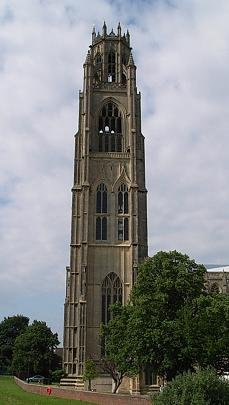
We were welcomed by our president, Tom Freeston (tower captain of The Stump) and with Gordon Coulson installed as door keeper, to ensure ringers ascended the correct spiral staircase, and that tourists kept to the other stairs (not only are there so many steps up to the ringing chamber and beyond, but there are two staircases).Two hours of good ringing followed, once we'd got our breath back, with visitors from Elloe Deaneries and Central Branch joining in. Ben Meyer was ringing master as Peter Udy was poorly, the bells were made good use of, with only a short break in the middle when Joe Waters was awarded his first quarter peal certificate by Tom Freeston. Most of the time, all 10 bells were in use, but one exception was when the Young Ringers (Bridget, Ben, Dan, and Joe) practiced their test piece for the Ringing World centenary striking competition to be held in London on March 26th 2011. They rang plain bob triples with four other ringers pretending to be under 19. We wish the team well on their big day out.
Report: Val Wild
Wheel Repaired at St Margaret's Church, Hemingby
We struggle to keep the bells ringing at St Margaret's! Sadly, last September at our ringing practice, the wheel of the tenor bell collapsed. On close inspection, the problem was not as serious as we thought at first. The rim was intact, although five of the seven "spokes" had disintegrated.
We are fortunate to have in Hemingby, an excellent joiner, Richard Parish, who had helped us many times in the past and he was happy to undertake the repair. He replaced the damaged parts, treated the whole wheel with worm killer and linseed oil, and by the beginning of November, we were ringing again. All this was completed at a bargain price and a generous grant from the Eastern Branch Bell Repair Fund covered the shortfall in our funds. We are most grateful.


Margaret Greenaway
Eastern Branch AGM at Kirton in Holland, Saturday 29th January 2011
Due to boiler breakdown problems, the church at Kirton was cold, but the tea was hot. Ringing in the afternoon was followed by a service, tea, the AGM and more ringing until 9 pm. John Collett presented the branch with an engraved trophy for the annual quiz, given in memory of his wife, Betty Collett.
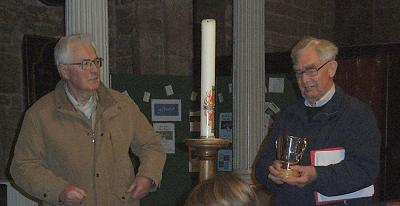
John Collett and Tom Freeston